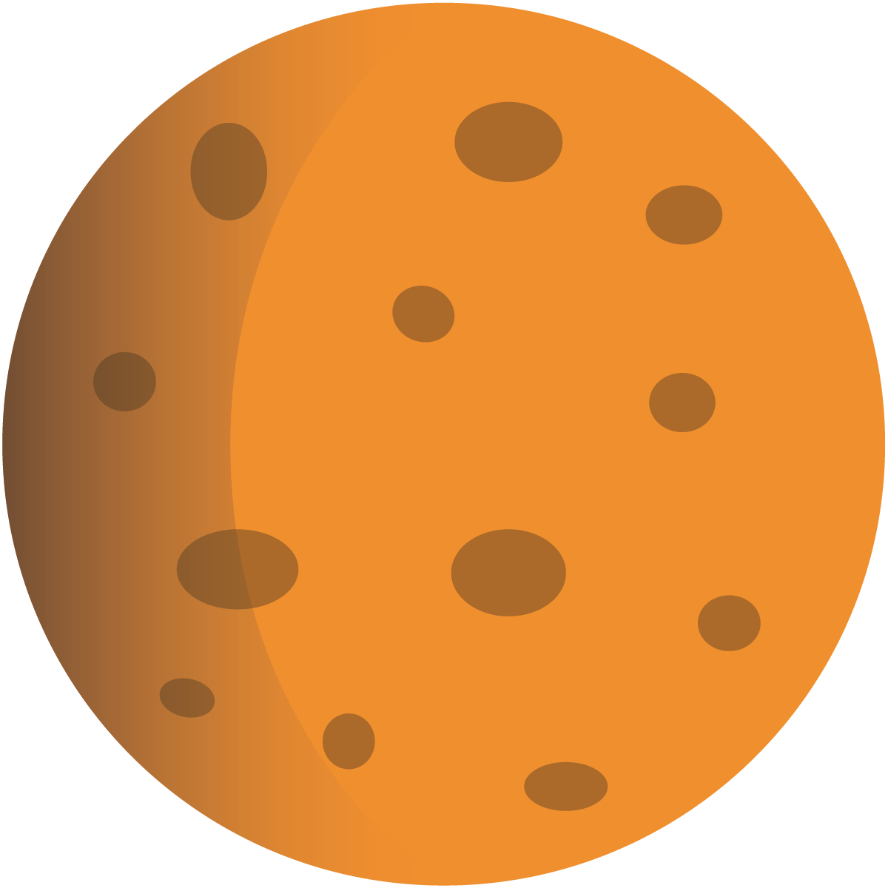
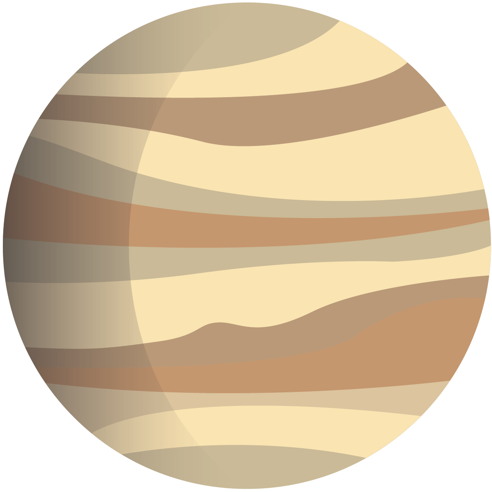
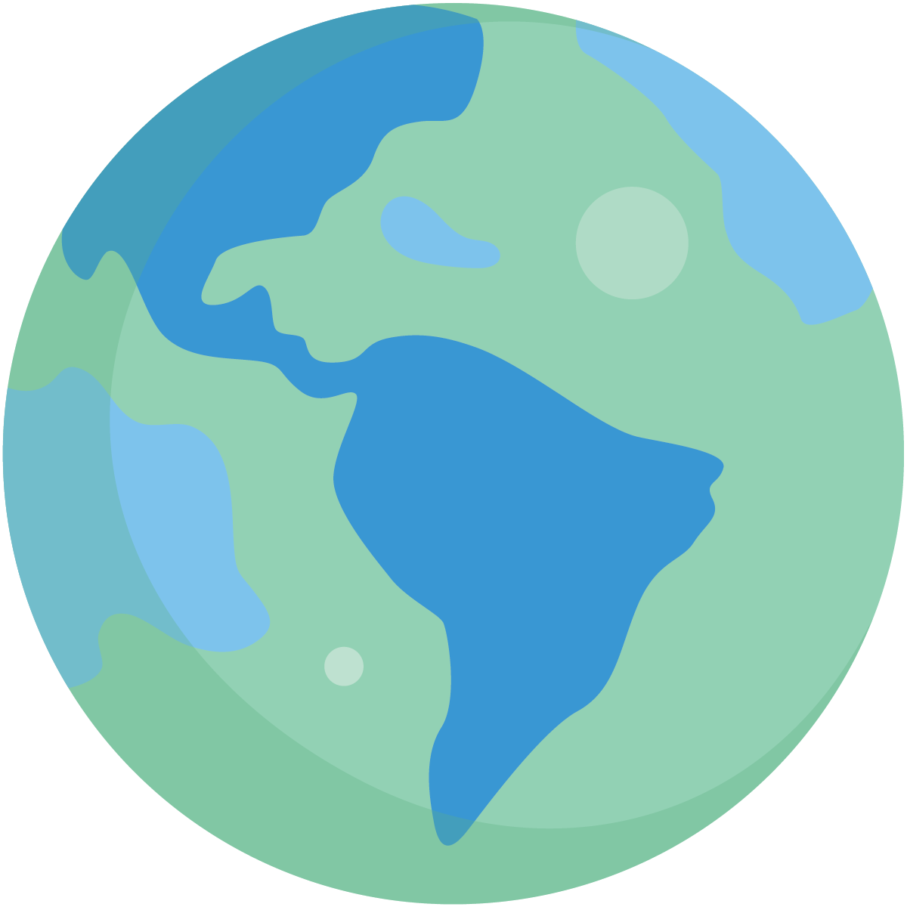
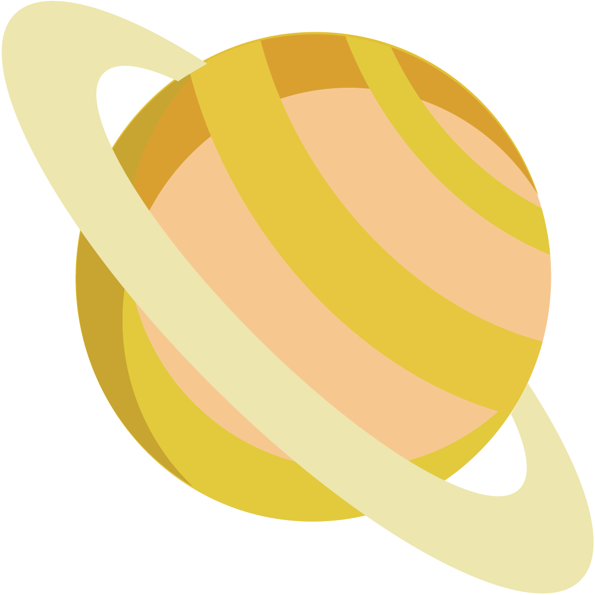
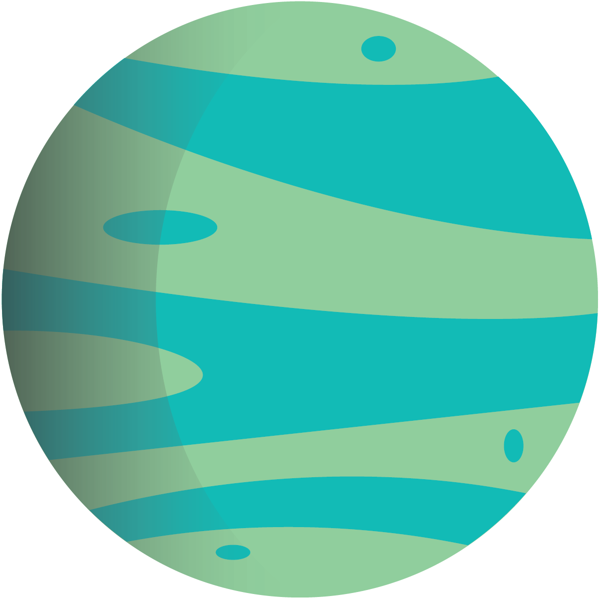

The Sun
The Sun is a star, a hot ball of glowing gases at the heart of our solar system. Its influence extends far beyond the orbits of distant Neptune and Pluto. Without the Sun's intense energy and heat, there would be no life on Earth. And though it is special to us, there are billions of stars like our Sun scattered across the Milky Way galaxy.
-
Mercury
Sun-scorched Mercury is only slightly larger than Earth's Moon. Like the Moon, Mercury has very little atmosphere to stop impacts and it is covered with craters. Mercury's dayside is super heated by the Sun, but at night temperatures drop hundreds of degrees below freezing. Ice may even exist in craters. Mercury's egg-shaped orbit takes it around the Sun every 88 days.
-
Venus
Venus is a dim world of intense heat and volcanic activity. Similar in structure and size to Earth, Venus' thick, toxic atmosphere traps heat in a runaway 'greenhouse effect.' The scorched world has temperatures hot enough to melt lead. Glimpses below the clouds reveal volcanoes and deformed mountains. Venus spins slowly in the opposite direction of most planets.
-
Earth
Earth is an ocean planet. Our home world's abundance of water - and life - makes it unique in our solar system. Other planets, plus a few moons, have ice, atmospheres, seasons and even weather, but only on Earth does the whole complicated mix come together in a way that encourages life - and lots of it.
-
 Mars
MarsThough details of Mars' surface are difficult to see from Earth, telescope observations show seasonally changing features and white patches at the poles. For decades, people speculated that bright and dark areas on Mars were patches of vegetation, that Mars could be a likely place for life-forms, and that water might exist in the polar caps. When the Mariner 4 spacecraft flew by Mars in 1965, many were shocked to see photographs of a bleak, cratered surface.
-
 Jupiter
JupiterThe most massive planet in our solar system, with four large moons and many smaller moons, Jupiter forms a kind of miniature solar system. Jupiter resembles a star in composition. In fact, if it had been about 80 times more massive, it would have become a star rather than a planet.
-
Saturn
Saturn was the most distant of the five planets known to the ancients. Like Jupiter, Saturn is made mostly of hydrogen and helium. Its volume is 755 times greater than that of Earth. Winds in the upper atmosphere reach 500 meters (1,600 feet) per second in the equatorial region. These super-fast winds, combined with heat rising from within the planet's interior, cause the yellow and gold bands visible in the atmosphere.
-
Uranus
The first planet found with the aid of a telescope, Uranus was discovered in 1781 by astronomer William Herschel. The seventh planet from the Sun is so distant that it takes 84 years to complete one orbit.
-
 Neptune
NeptuneNearly 4.5 billion kilometers (2.8 billion miles) from the Sun, Neptune orbits the Sun once every 165 years. It is invisible to the naked eye because of its extreme distance from Earth. Interestingly, the unusual elliptical orbit of the dwarf planet Pluto brings Pluto inside Neptune's orbit for a 20-year period out of every 248 Earth years